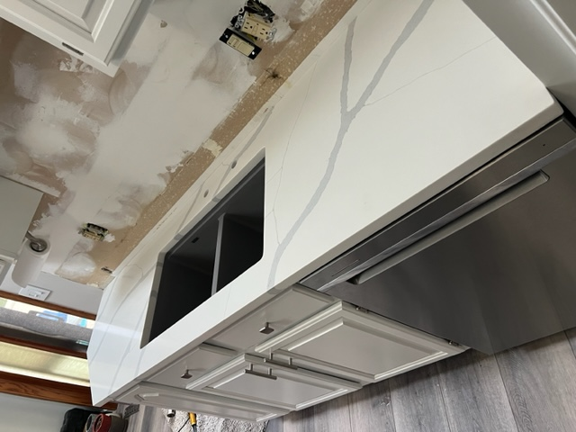

Natural Stone VS Manufactured Stone
Stepping into a kitchen or bathroom adorned with stunning counter tops is an experience like no other.
The surfaces you choose not only set the visual tone of the space but also influence its functionality and overall feel.
At Pro Elegant Installations, we understand the importance of this decision,
which is why we offer a dazzling array of materials to suit every taste and budget.
Whether you're drawn to the undeniable charm of natural stone or the practical advantages of manufactured options,
Pro Elegant Installations is here to guide you every step of the way.
Our expert team will help you navigate the vast selection, understand the pros and cons of each material,
and ultimately choose the counter tops that perfectly complement your style and lifestyle.
Natural Stone

For those who crave the timeless elegance and inherent beauty of natural materials, our selection of natural stones is unrivaled.
From the rich veins of granite and the sophisticated charm of marble to the earthy elegance of quartzite and
the unique character of soapstone, each slab boasts a one-of-a-kind personality.
Benefits of Natural Stone
- Unmatched Beauty: Each piece is a unique work of art, showcasing the artistry of nature in its purest form.
- Durability: With proper care, natural stone countertops can last a lifetime, adding value to your property.
- Heat Resistance: Certain stones, like granite and quartzite, are highly heat-resistant, making them ideal for busy kitchens.
- Easy to Maintain: Contrary to popular belief, most natural stones require minimal maintenance with proper sealing.
Potential Drawbacks of Natural Stone
- Higher cost: Generally more expensive than manufactured stone options.
- Less uniform: Veining and natural variations can be unpredictable for some people.
- Potential chipping: Softer stones like marble are more prone to chipping and scratches.
- Porosity: Sealing is necessary to prevent staining and bacterial growth.
Manufactured Stone

For those seeking a blend of style, practicality, and affordability, manufactured stone offers a compelling alternative.
Engineered to perfection, these materials come in a vast array of colors, patterns, and textures,
allowing you to achieve any aesthetic you desire.
Benefits of Manufactured Stone
- Versatility: Mimic the look of natural stone or explore bold, contemporary designs with endless color and pattern options.
- Uniformity: Consistent in color and texture throughout, eliminating concerns about veining or variations.
- Lower Maintenance: Generally requires less maintenance than natural stone, making it ideal for busy households.
- Eco-Friendly: Many manufactured stone options are made from recycled materials, contributing to a sustainable choice.
Potential Drawbacks of Manufactured Stone
- Heat sensitivity: Certain manufactured stones can be damaged by high temperatures.
- Potential seams: Veining and natural variations can be unpredictable for some people.
- Less inherent beauty: Large countertops may require seams, which can be noticeable depending on the material.
- Potential scratching: Not as scratch-resistant as some natural stones like granite.
Remember, both natural and manufactured stone options have their own strengths and weaknesses. The best choice ultimately depends on your priorities and budget.